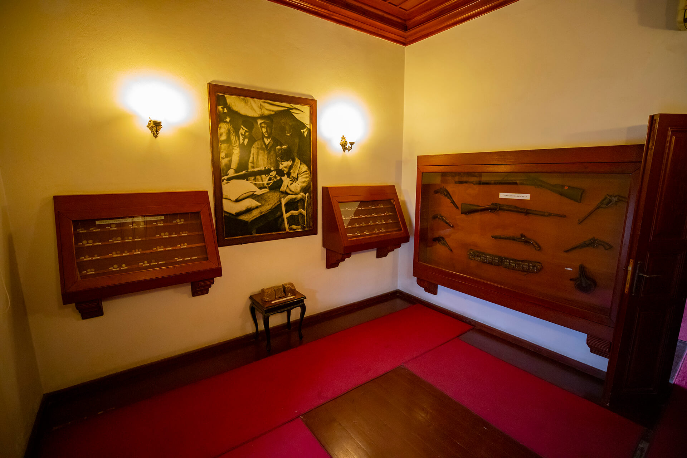

|  |
Atatürk Evi Müzesi, İlimiz Seyhan İlçesi, Kayalıbağ Mahallesinde yer almakta olup, 19.yy.da yapılmış Geleneksel Adana Evlerinin en iyi örneklerinden biri olarak kabul edilmektedir. Konak, ahşap yığma tarzda iki katlı kagir bir yapıdır. Osmanlı mimarisinin özelliklerini yansıtan bina, Adana Kültür Varlıklarını Koruma Bölge Müdürlüğünce taşınmaz kültür varlığı olarak tescillenmiştir.
Mustafa Kemal ATAÜRK Adana’ya ilk kez 31 Ekim 1918 tarihinde Alman General Liman Von Sandres’den Yıldırım Orduları Grup Kumandanlığını devralmak için gelmiş ve zihninde milli mücadele fikrinin düşünsel temeli Adana’da kaldığı bu süre zarfında oluşmuştur.
Adana’yı bir çok kez ziyaret eden Atatürk’ün bu seyahatleri esnasında kaldığı ve konakladığı mekanlardan birisi de Suphi Paşa Konağıdır.
Adana’nın ileri gelen ailelerinden olan, Ramazanoğullarından Suphi Paşa’ya ait olan konakta, Ulu Önder Mustafa Kemal ATATÜRK eşi Latife Hanımla birlikte 15 Mart 1923 tarihinde Adana’ya gelişlerinde misafir olmuşlardır.
Konak bir süre sahipleri tarafından terk edilerek boş bırakılmış daha sonra ki yıllarda çeşitli kamu kurum ve kuruluşlarınca kullanılmıştır. Zamanın 6.Kolordu Komutanı Korgeneral Sayın Bedrettin DEMİREL tarafından Atatürk Müzesi Yaptırma ve Yaşatma Derneğinin öncülüğünde Adana Halkının katkılarıyla onarılmış ve kamulaştırılarak 1976 yılı Ağustos ayında Atatürk Bilim ve Kültür Müzesi olarak düzenlenmiştir.
Atatürk’ün 100. doğum yılı olan 19 Mayıs 1981 tarihinde Atatürk Evi Müzesi olarak Müze Müdürlüğü’ne bağlı bir birim olarak hizmete açılmıştır. 27 Haziran 1998’de İlimizde meydana gelen depremde hasar görmüş ve restorasyonu yapılmak üzere kapatılmıştır.
Restorasyon işlemlerinin tamamlanmasının ardından Ulu Önder Atatürk’ün milli mücadeleden sonra Adana’ya gelişinin 80. Yıldönümü olan 15 Mart 2003 tarihinde yeniden ziyarete açılmıştır.
Atatürk'ün Adana'ya gelişi her yılın 15 Martında resmî törenle bu binada kutlanmaktadır.
|